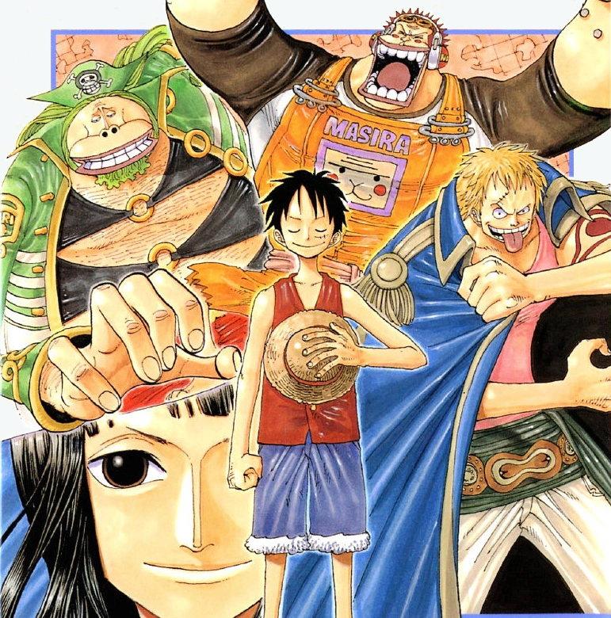

After the Straw Hat Pirates' Log Pose points them towards the sky, they travel to the island of Jaya and work with Mont Blanc Cricket to determine if there is indeed an island in the sky. While in the pirate-populated port town of Mock Town, Luffy ends up in conflict with the overconfident and cruel Bellamy, while also meeting an enigmatic man who advises Luffy to never give up on his dreams.
An Archaeologist and a Ship from the Sky
With Princess Vivi safely back in Arabasta and a new crewmate, Nico Robin, on board, the Straw Hats' next adventure begins when a giant ship suddenly falls from the sky. At this point, the Log Pose starts to point straight up and Robin explains that the log is "captured" by an island with a stronger magnetic field—a Sky Island. While exploring the sinking ruins of the ship, they come across an old map of a land named Skypiea. Through a skull and some books, they figure out that the ship is the Saint Briss, which left the Kingdom of Breeze in South Blue 208 years ago. This piques the interest of the crew and they decide to salvage the sunken ship.
When they try to salvage the sunken ship for more information, they come across a group of pirates led by Masira, who claims that he has control over the territory and all ships that sank there belong to him. Masira and his crew begin the salvage operation and are in the process of raising the ship when they run into a snag. Luffy, Zoro, and Sanji, who were underwater searching the wreck, start beating up Masira's crew. Masira goes down to handle things and confront them when a Giant Sea Turtle comes along and swallows the ship, though Luffy, Zoro, Sanji, and Masira all escape. However, out of nowhere, the sky turns dark and three humongous shadows appear. Out of fear, the pirates run away as quickly as possible. Luckily, Robin manages to take an eternal pose to the nearby island of Jaya from Masira's ship, and goes there to find more information.
The Dreamless City: Mock Town
Roshio the Executioner, a pirate with a Beli 48 million bounty, wins a poker game against Hyena Bellamy, a pirate with a bounty of Beli 55 million. Bellamy accuses Roshio of cheating and gets Sarquiss to back him up. When Roshio disagrees, Bellamy stabs his hand with a knife and shoots him in the head.
In the port town of Mock Town, the group of Luffy, Zoro, and Nami encounter several odd people, all of whom are members of the Blackbeard Pirates, until they end up at a hotel. There, they encounter Sarquiss of the Bellamy Pirates, who insults the group and even gives them some money to buy better clothes. They later end up in a bar, where they encounter Blackbeard himself, though they do not know who he is. After he leaves, Bellamy himself barges in looking for Luffy, claiming that he wants to test him to see if he is worthy of joining his "New Age" of pirates. However, when Nami asks the bartender for information about Sky Island, Bellamy rejects this notion immediately and the entire bar starts ridiculing the three.
In Bellamy's "New Age", dreams will be worthless. He explains that so many people are focused on searching for dream treasures like the City of Gold and the One Piece, that they ignore all of the real treasures around them. Bellamy attacks Luffy and Zoro while the other people in the bar start throwing things at them, but despite Nami's urging, they refuse to fight back, paralleling how Shanks and his crew did not fight back against Higuma when he and his crew attacked them in Makino's bar.
The Tale of Noland the Liar
They are laughed out of the bar, where they once again encounter Blackbeard, who states that they did the right thing not fighting back those who are not worth the effort of fighting against and encourages Luffy on his dreams. The three go back to the ship to discover that Robin has managed to find some relevant information—on the other side of the island there is a man who might know how to reach Sky Island, Mont Blanc Cricket. On the way there, they encounter Shoujou, an orangutan pirate who has a Beli36 million bounty, and is also Masira's brother,[9] but they manage to escape. They arrive at his house to find that it is empty, but they found a book—the story of Mont Blanc Noland, a.k.a. "Liar Noland". Sanji explains that it is a fairy tale from North Blue.
The story of Noland goes that while exploring the Grand Line hundreds of years ago, Noland came across a City of Gold. He returned to his home and informed the king, who accompanied him on the next journey to the island. However, when they reached the island, the City of Gold was gone. Angered, the king sentenced him to death for lying.
To his last breath, Noland claimed that he was telling the truth, and proclaimed that the City of Gold must have sunk underwater. However, no one would believe him and he was executed. As it turned out, Cricket is a descendant of Noland and was trying to prove whether it exists or not by diving into the ocean every day to search for evidence, to the point of injuring himself.
Chopper treated him and they met up with Masira and Shoujou again, who helped Cricket out on his quest under the name "Saruyama Alliance". Cricket explained that if the Sky Island existed, the only way to reach it would be through "Knock Up Stream", a humongous geyser in the ocean. In order to reach it, Cricket has the Straw Hats go into the forest to search for a "South Bird", a bird whose head always points south. During this time, the Saruyama Alliance upgraded the Going Merry in order to withstand Knock Up Stream.
The Captain's True Power: Luffy Vs. Bellamy
Meanwhile, hearing that Cricket managed to uncover some gold, Bellamy and his crew decided to steal it from him, severely injuring him and the others in the process using his "Bane Bane no Mi", which can turn his limbs into springs. When the crew returned with the South Bird in tow, Luffy decided to get the gold back. In Mock Town, new bounties were mailed in, and to everyone's surprise, they found out that Luffy's bounty was Beli100,000,000 while Zoro’s was Beli 60,000,000—in comparison, Bellamy's was only Beli 55,000,000. Bellamy scoffed at this, claiming that they were fakes that were made to scare him.
This calmed everyone down, until Luffy screamed for Bellamy to come out. Luffy demanded that Bellamy give the gold back, but he refused. Bellamy attacked him with his devil fruit powers, but Luffy still does not fight back. Angered, he decides to finish him off with his ultimate attack, Spring Hopper while still mocking him for following dreams. At this point, Luffy finally becomes fed up with Bellamy's words and took him down with a single punch. The terrified pirates realized that Luffy's wanted posters were actually real and ran away in fear. Luffy then took the gold and went back to Cricket's house while the remainder of the Bellamy Pirates were too afraid to fight back. Upon hearing about his bounty, Blackbeard and his crew decided to strike.
A World on the Move and the Flying Ship
Somewhere else, on an island in the Grand Line, the status of Buggy and his crew was shown, as Ace boarded his ship and offered to help him search for Luffy. Meanwhile, Shanks tried to contact Whitebeard only to have his letter torn up, with Whitebeard telling the messenger, Rockstar, to have Shanks meet him in person. Rockstar reported back, to which Shanks told the crew to prepare for a meeting with Whitebeard.
At Mary Geoise, a meeting of the Marines and the Seven Warlords of the Sea was being held to discuss what should be done about replacing the Warlord Crocodile. Much to then-Fleet Admiral Sengoku's surprise, two of the seven Warlords (Bartholomew Kuma and Donquixote Doflamingo) were in attendance when Hawkeye Mihawk arrived. Just when the actual meeting was about to begin, Laffitte of the Blackbeard Pirates appeared to recommend his captain as Crocodile's replacement. The people there stated that nobody has ever heard about him, but Laffitte stated that they were presently working on a plan to change that.
When Luffy returned and gave Cricket his gold back, he and the crew set off for Knock Up Stream, led by the Saruyama Alliance and the South Bird. When they reach the right area, they were confronted by the Blackbeard Pirates, who revealed the Straw Hat Pirates' new bounties to them. However, before a battle ensued, the Straw Hats were caught in Knock Up Stream and were sent flying into the White Sea, leaving the Blackbeard Pirates' raft to be destroyed and to fall to the sea below.